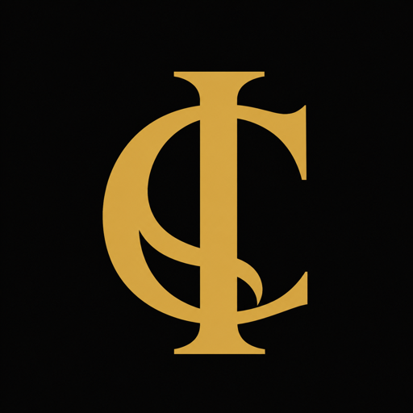

Crie sua conta
Seu acesso gratuito guarda a experiência e a devolutiva em um só lugar.

O Código InternoUm convite pessoal para você
Criei uma experiência gratuita com quatro símbolos para você observar como sua percepção organiza caminhos, escolhas e respostas — inclusive aquelas que surgem antes de qualquer explicação racional.
— Ravel Dunningham
Aceitar o convite e criar minha contaGratuito · menos de 10 minutos · devolutiva revisada pessoalmente
Antes de começarmos
Criei O Código Interno a partir de anos de investigação sobre os padrões que influenciam nossas escolhas, reações e movimentos — muitas vezes antes mesmo de conseguirmos explicá-los.
Meu trabalho transforma a linguagem simbólica da sua experiência em referências mais claras para o seu desenvolvimento. Nesta dinâmica, eu também reviso pessoalmente sua devolutiva antes que ela seja liberada.
Mapeamento Simbólico · Estrutura Decisional
O Código Interno — Primeiros Sinais
Durante uma breve experiência guiada, você será convidado a perceber quatro imagens e registrar os detalhes que surgirem espontaneamente.
Não existem respostas certas ou erradas. O que importa é como cada símbolo apareceu, o que aconteceu entre vocês e o que você sentiu.
Esses elementos formam um rascunho interpretativo sobre seu momento atual. Sua devolutiva ficará organizada em uma área privada e será revisada por mim antes de ser liberada.
Você não paga para participar.
A experiência leva menos de dez minutos.
Suas respostas ficam na sua conta.
Eu reviso antes de você receber.
Como acontece
Seu acesso gratuito guarda a experiência e a devolutiva em um só lugar.
Encontre um lugar tranquilo, acompanhe a condução e permita que as imagens surjam.
Descreva o que viu, como interagiu e o que sentiu diante de cada símbolo.
Depois da minha revisão, a leitura completa ficará disponível no aplicativo.
Antes de começar
“Não tente produzir uma resposta interessante. A parte mais reveladora costuma estar no detalhe que você quase não percebeu.”
A proposta não é prever seu futuro ou definir quem você é. É oferecer uma hipótese de desenvolvimento construída a partir das imagens, interações e emoções descritas por você.
Seu convite está aberto
Crie sua conta gratuita e comece por Primeiros Sinais. Depois, volte com calma para ler sua devolutiva.
Quero fazer Primeiros SinaisNos vemos do outro lado.
Ravel Dunningham